Participate in the supplier
Explanation: When you release OpenCV to remove distortion pictures, we release our own code to distort pictures, mainly for Verify that the processing of camera parameters in our code is correct (if the disorders are the same)
Virtue
Desai provides Zhou Shi: front_left / front_right / rear_left / rear_right / rear
rear_left
The figure below is the original picture / OpenCV's own de -distorting function / use the picture that has been changed to the distorted model to obtain the distort. You can see that after the internal parameters given by the supplier
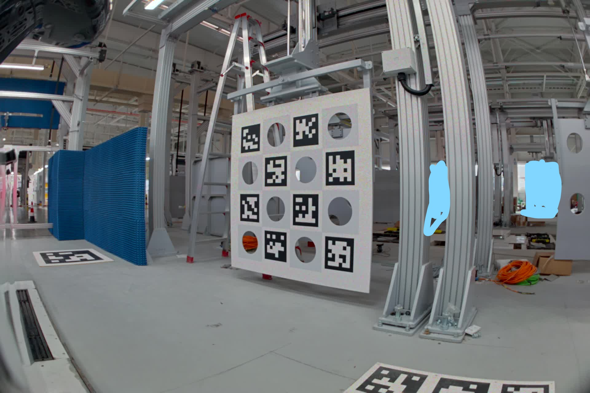 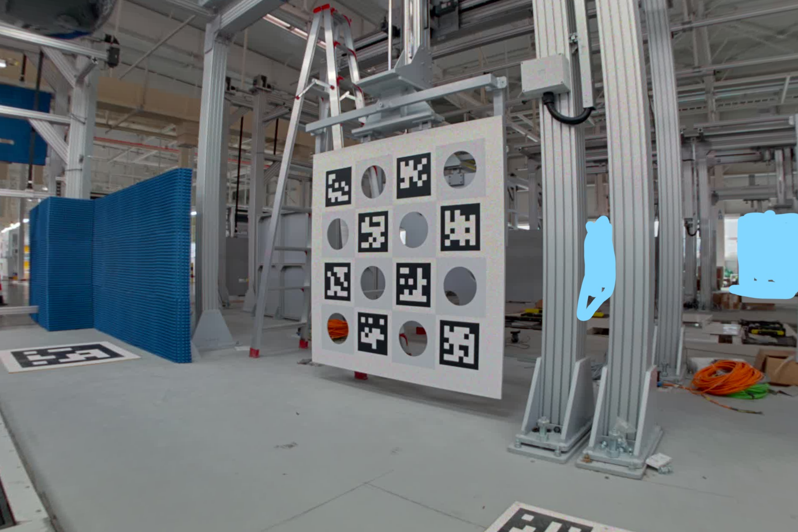 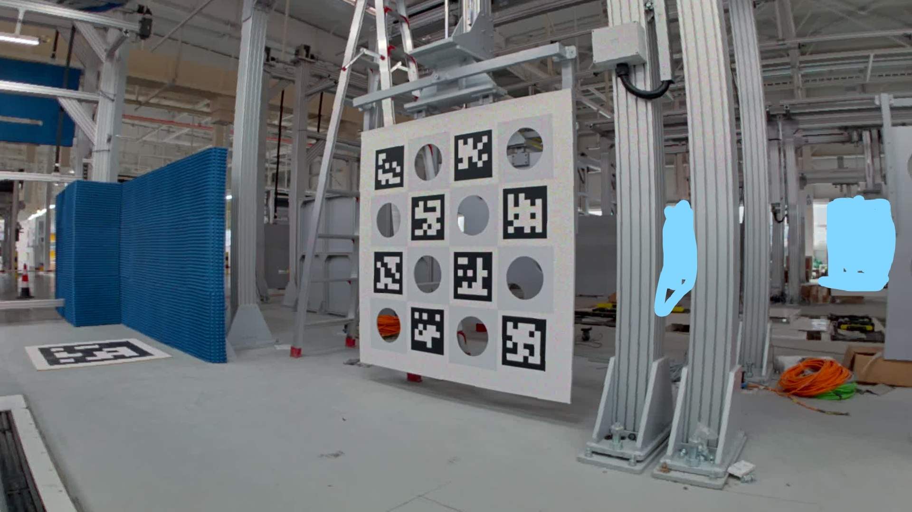
The figure below uses our own internal reference (also rear_left, but not this car), which feels better than the above
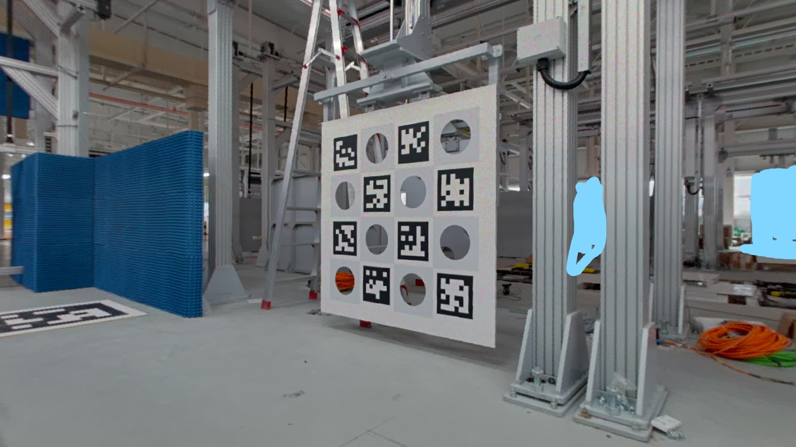
front_left
The figure below is the original picture / OpenCV's own de -distorting function / use the picture that has been changed to the distorted model to obtain the distort. You can see that after the internal parameters given by the supplier
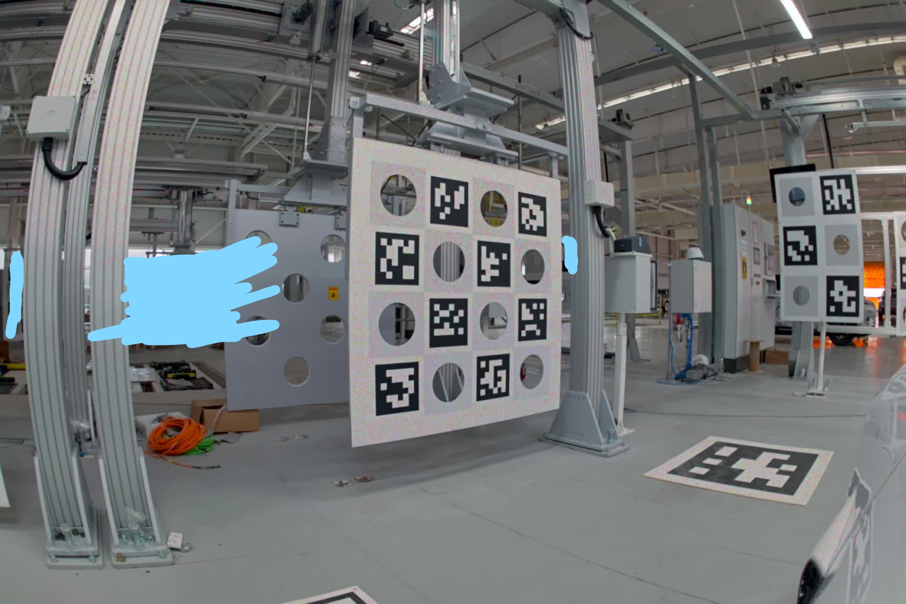 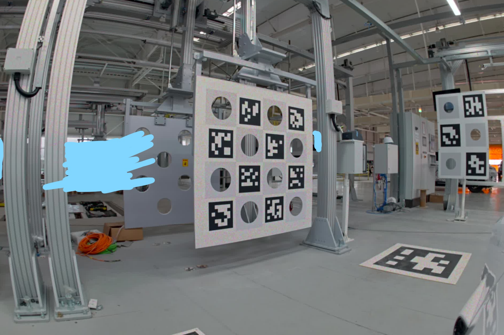 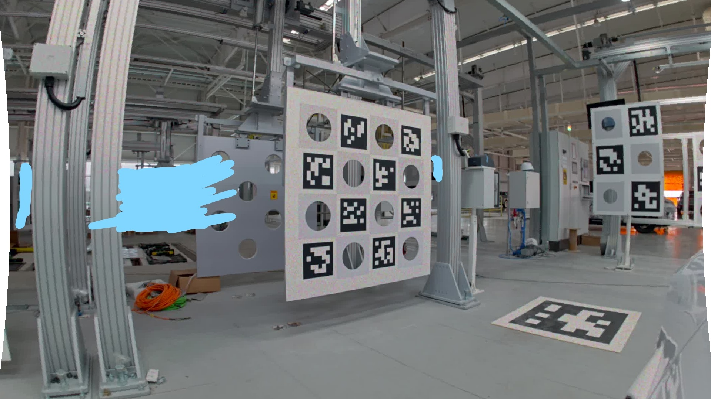
The figure below uses the internal reference of our own target (also from_left, but not this car). It feels better than the above effect.
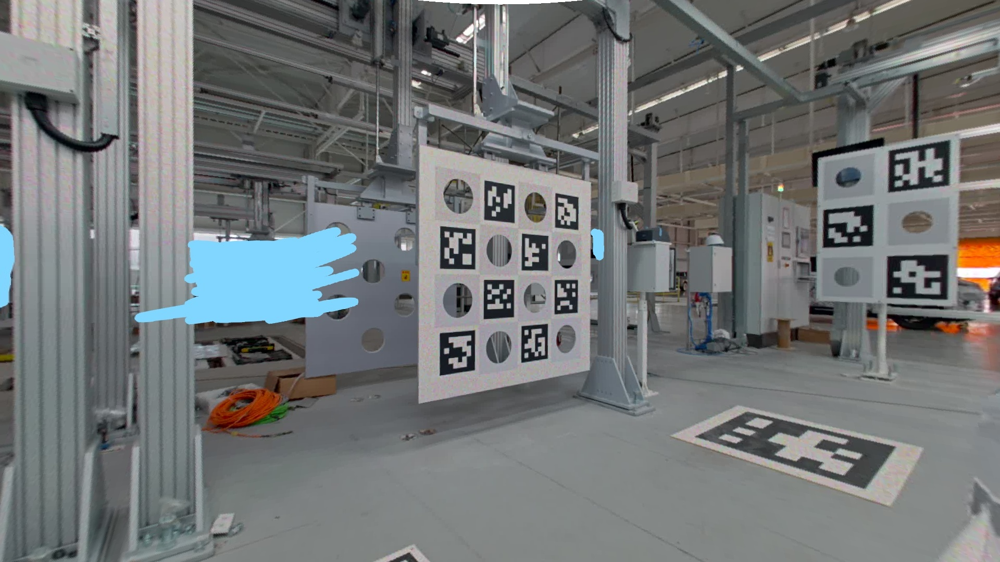
There may be problems with the internal paragraph analysis and use of these five cameras. At present, it does not affect the channel.
(1) And the supplier confirms the original value of the brushing, verify that our analysis is no problem
(2) Please go on the supplier's own abandonment according to their parameters to see if the results we get are the same.
a. If the same is the same, then there are problems in the internal ginseng, you need to re -give it
b. If different, they are OK after they go to the other side, so please provide the supplier to provide their internal paragraphs of use, or re -calibrate a set of internal parameters according to our internal reference usage method.
Ophi
OPHI provides Zhou Shi: front_wide / front_tele
front_wide
The following are pictures obtained by the original picture / using the 8 distortion models that have been changed.
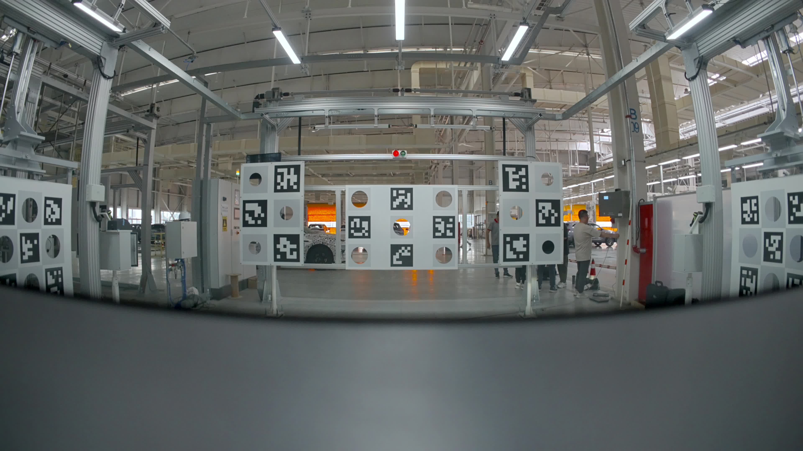
 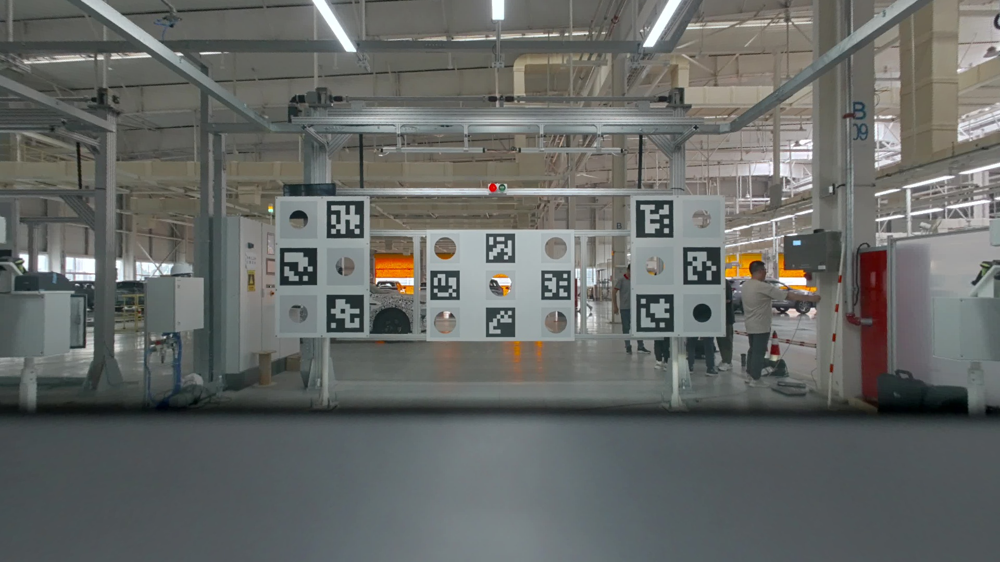
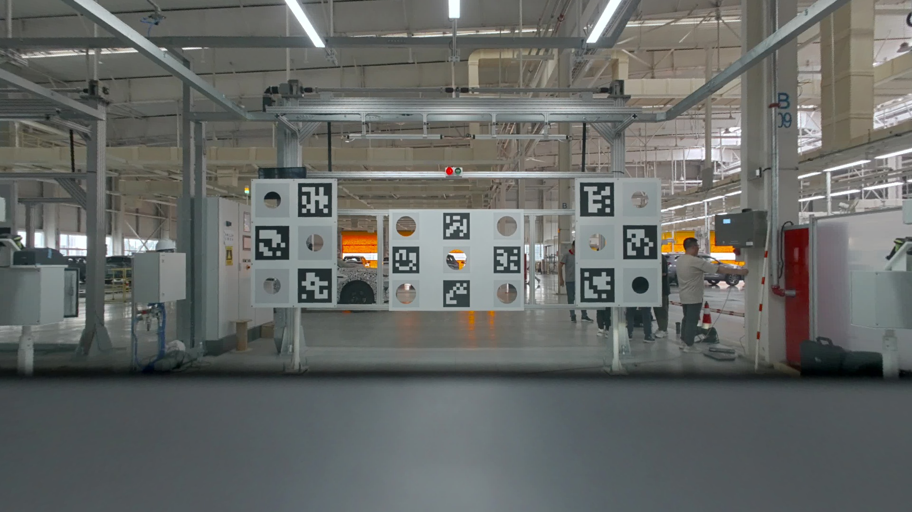
front_tele
The following are the original diagram / OpenCV's self -dependent function / use the picture that has been changed to the distorted model to obtain the distort. It feels good
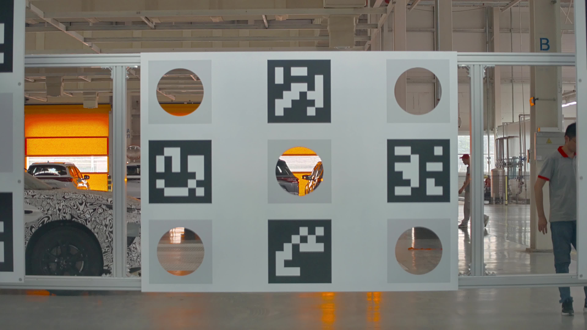
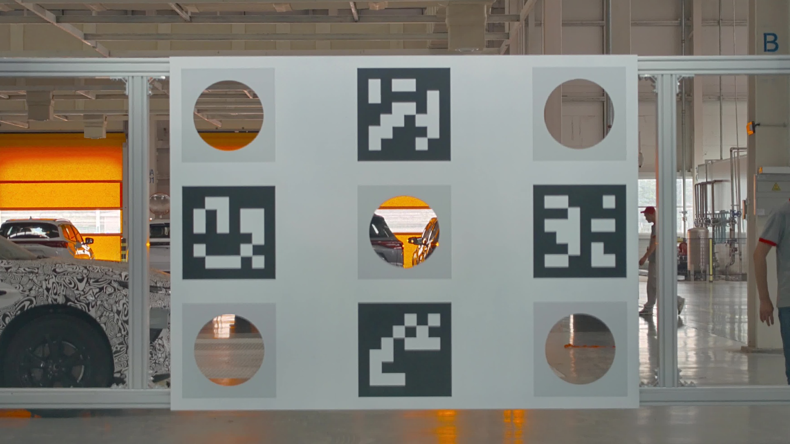

The internal effects of these two cameras have not found problems for the time being
Baolong
BAOLONG provides fish -eye visual: nrcs_front / nrcs_left / nrcs_right / nrcs_rear
(1) Provides the original value of brushing, compares with the values of our analysis, and confirm that there is no problem with the analysis process
(2) Because it is used in a set of uniform values, the final actual accuracy cannot be verified
These four cameras have no problem analysis, accuracy cannot be measured at present